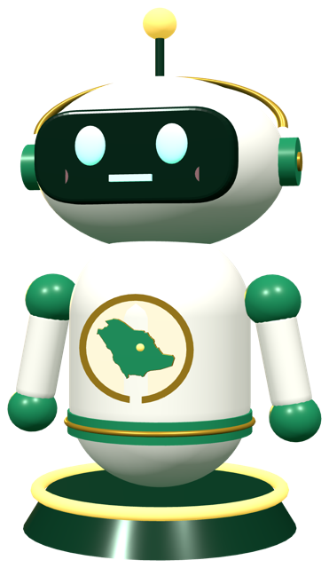

ورقةُ زيارةٍ صفّيّة • الدراساتُ الاجتماعيّة • الوحدةُ الرابعة: جغرافيةُ وطني
درسُ الموقعِ والحدود
رحلةُ المستكشفةِ السعوديّة: نكتشفُ موقعَ وطنِنا وحدودَه، وسرَّ أهمّيّتِه بين دولِ العالم
المدرسةابتدائيّةُ التحفيظِ بالرويضة
معلّمةُ المادّةأ. إيمان السهلي
مديرةُ المدرسةأ. شيخة القحطاني
الصفّ / التاريخ............ / ....../....../......
أهدافُ الدرس
- ١أن تحدّدَ الطالبةُ موقعَ المملكةِ العربيّةِ السعوديّةِ على خريطةِ العالم.
- ٢أن تتعرّفَ القارّاتِ الثلاثَ التي تربطُ بينها شبهُ الجزيرةِ العربيّة.
- ٣أن توضّحَ أهمّيّةَ موقعِ المملكةِ العربيّةِ السعوديّة.
- ٤أن تحدّدَ حدودَ المملكةِ العربيّةِ السعوديّةِ من الجهاتِ الأربع.
الاستراتيجيّاتُ المستخدمة
- رحلةُ المستكشفةِ السعوديّة: الطالبةُ مستكشفةٌ تنتقلُ بين أربعِ محطّاتٍ على خريطةٍ تفاعليّة (التعلّمُ بالاكتشاف).
- الرسالةُ السرّيّة (اللغز): تمهيدٌ مشوّقٌ يثيرُ الدافعيّةَ والفضول.
- فكّري واستنتجي: أسئلةٌ تُنمّي التفكيرَ الناقدَ والاستنتاج.
- التعلّمُ التعاونيّ: أربعُ مجموعات (الغيوم، النجوم، الفراشات، الورود) بخريطةٍ صمّاءَ وأدوارٍ محدّدة.
- مهاراتُ التفكيرِ العليا: تحليل، افتراض، تقييم، إبداع.
- التعلّمُ باللعب: تحدّي الدقيقة، والبطاقاتُ المقلوبة، والاختيارُ العشوائيُّ للسؤالِ الفرديّ.
تفعيلُ التقنية
- روبوتٌ بالواقعِ المعزّز (AR): يظهرُ في الفصلِ عبر كاميرا الجوّال، ومعه كرةٌ أرضيّةٌ ثلاثيّةُ الأبعادِ تدوّرها الطالبة لتكتشفَ خريطةَ المملكة.
- كرةٌ أرضيّةٌ وخرائطُ تفاعليّة: سحبٌ وتدويرٌ وتحديدُ المواقعِ بالضغطِ على الخريطة.
- عرضٌ تفاعليّ: يعملُ على السبّورةِ الذكيّةِ والآيباد، بتغذيةٍ راجعةٍ فوريّةٍ ومؤقّتات.
- صوتٌ بالذكاءِ الاصطناعيّ: ترحيبُ الروبوتِ وحوارُه.
- تقييمٌ إلكترونيٌّ للدرس: عبر صفحةِ الروبوت (الرمزُ أسفلَ الورقة).
التقويم
تشخيصيّ قبليّتكوينيّ: نشاط ١ و٢
سؤالٌ فرديّختاميّ: ٧ أسئلةبطاقةُ خروج
القيمُ والمواطنة
النشيدُ الوطنيّالمادّة ٣٤ من النظامِ الأساسيِّ للحكم
حمايةُ حدودِ الوطنمكانةُ قِبلةِ المسلمين
١التمهيدرسالةٌ سرّيّة + الروبوت
٢المحطّة ١الموقع والقارّات
٣المحطّة ٢الدولُ المجاورة
٤المحطّة ٣المسطّحاتُ المائيّة
٥المحطّة ٤التحدّي النهائيّ
٦الختامتقويمٌ وبطاقةُ خروج
جرّبي روبوتَ الدرس.. وقيّمي الدرس
امسحي الرمزَ بكاميرا الجوّال ← «ابدئي التجربة» ← اسمحي بالكاميرا، ثمّ اضغطي زرَّ النجمةِ لتقييمِ الدرس.

الاسم: ..............................................التوقيع: ..............................